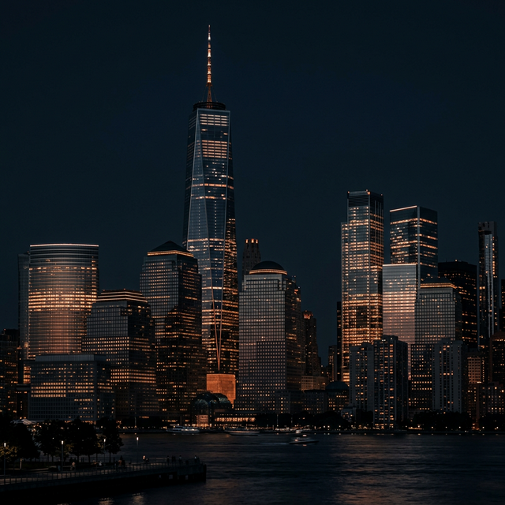
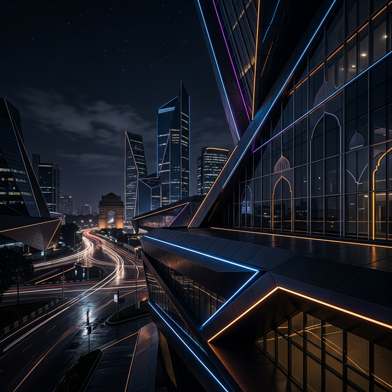

Pitch your ideas, showcase your innovation, and unlock opportunities
through Ideabaaz global platforms.
Ideabaaz connects creators, founders, and innovators with global platforms to showcase
their ideas and gain industry exposure.
Unlock global exposure through our premier platforms.

Pitch your startup to top investors in New York and Silicon Valley. Gain international exposure and scale globally.
Learn More →
Showcase your creative innovation at the Bharat Mandapam. Connect with industry titans and national media.
Learn More →Ideabaaz connects creators, founders, and innovators with global platforms to showcase their ideas and gain industry exposure. We believe in providing a national stage for emerging startups to pitch, innovate, and connect with the titans of industry.
Through our strategic partnerships with ZeeTV and Zee5, we bring the excitement of startup pitching to millions of screens across the nation.
We resolve problems associated with startup scaling procedures.
Showcase your innovation to international markets and investors.
Learn from industry leaders who scaled unicorns.
Present directly to our Titans panel.
Integration into dynamic networks.
National showcases on ZeeTV and Zee5.
A seamless process to take your startup from application to national television.
Submit your deck
Expert review
Live presentation
Funding & Growth